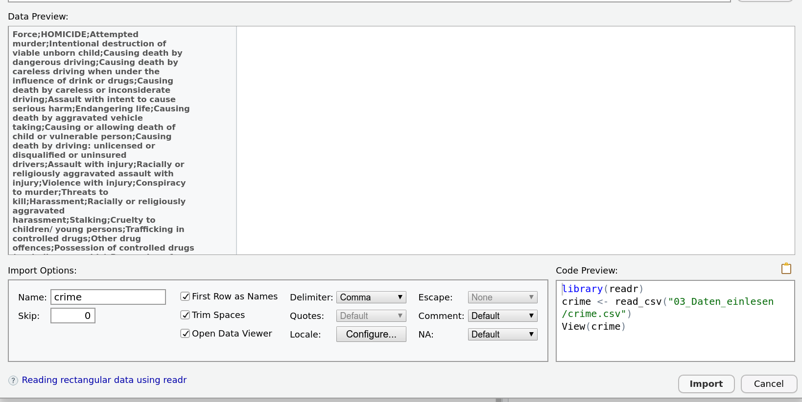
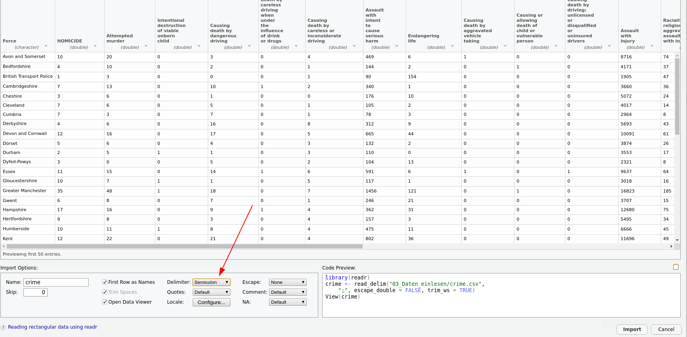
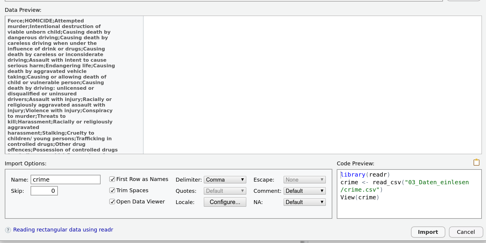
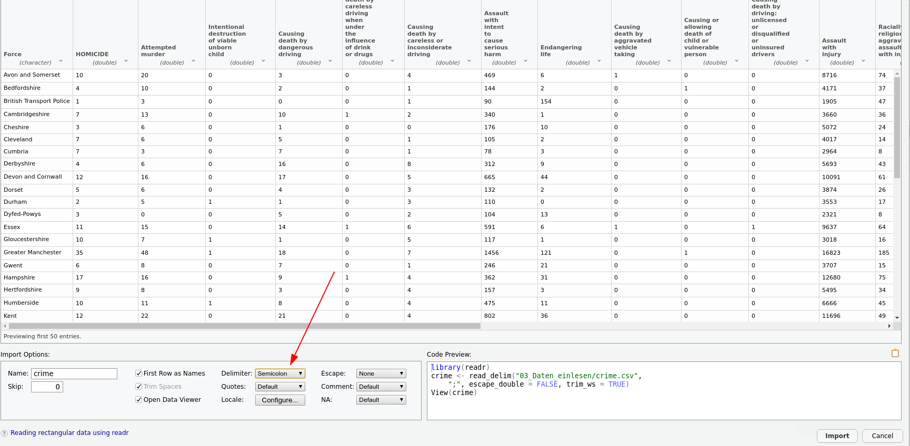
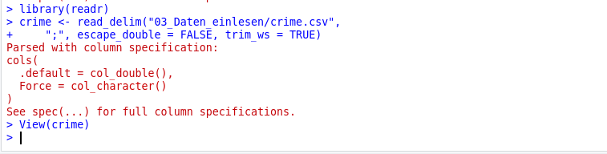
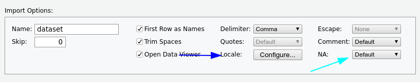
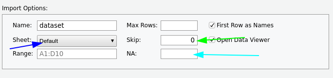
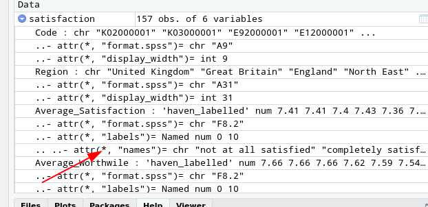
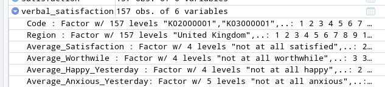

Das Trennzeichen(Delimiter) ist falsch gesetzt. In den Daten sind die Zellen offensichtlich durch Semikolons getrennt.

Das Rechnen mit den mit R mitgelieferten Datensätzen ist natürlich nur bedingt realitätsnah.
Im durchschnittlichen Anwendungsfall müssen externe Datensätze eingelesen werden.
Dabei sind im tidyverse dafür je nach Quelle folgende Pakete vorgesehen:
Textbasierte Daten(.txt, .csv, .tsv,...) \(\rightarrow\) readr
Excel-Mappen(.xlsx, .xls) \(\rightarrow\) readxl
Daten aus anderen Statistikpaketen(.sav, .dta,...) \(\rightarrow\) haven
Alle diese drei Pakete sind auch in der RStudio-GUI implementiert:


Das Einlesen und Aufbereiten wird am folgenden Beispiel exerziert:
Uns interessiert der Zusammenhang von Drogenmissbrauch, Lebenszufriedenheit und Straftaten in Großbritannien. Dafür haben wir die folgenden drei Datensätz zur Verfügung:
'crime.csv' - Eine Textdatei mit nach Polizeibehörde aufgeschlüsselten Straftaten
'drugs.xlsx' - Eine Excel-Arbeitsmappe mit nach Region aufgeschlüsselten Zahlen zu Krankenhauseinweisungen mit drogenbedingten Diagnosen
'satisfaction.sav' - Ein in SPSS erstellter Datensatz mit nach Region aufgeschlüsselten Ergebnissen einer Bevölkerungsbefragung zur Lebenszufriedenheit
Die GUI ist hier ein guter Start. Wir wollen die Datei 'crime.csv' einlesen. Diese enthält echte Daten über von britischen Polizeibehörden aufgezeichnete Straftaten von der Website der britischen Regierung. Wenn ich dem Pfad im GUI folge, ergibt sich das folgende Bild:

Was ist das Problem?
Das Trennzeichen(Delimiter) ist falsch gesetzt. In den Daten sind die Zellen offensichtlich durch Semikolons getrennt.

Der für das Einlesen nötige Code wird dann von RStudio in die Konsole kopiert und ausgeführt. Um nicht jedes Mal beim Ausführen desselben Skriptes wieder per Hand den Datensatz einlesen zu müssen, kopiert man den Code dann an den Anfang des Skriptes.

Was passiert hier?
1crime <- read_delim("data/crime.csv",
2 ";",
3 escape_double = FALSE,
4 trim_ws = TRUE)
5View(crime)crime das Textfile mit Trennzeichen unter dem angegebenen Pfad ab. Dabei…
Mit dem Output teilt R mit, dass es Kommazahlen als Standard-Zelleninhalt versucht und bei nicht-Funktionieren auf character zurückfällt. Das ist trotz der Farbe keine Fehlermeldung.
Noch zwei wichtige Tricks in dem Einlesetool sind die locale-Schaltfläche und das NA-Menü

Für die Excel-Arbeitsmappen ist die GUI auch der einfachste Weg.
Wie würde man vorgehen um die Datei drugs.xlsx einzulesen?

Auch bei Excel-Mappen an das Kopieren des Codes denken!
library(readxl)
drugs <- read_excel("data/drugs.xlsx",
sheet = "Table 2",
na = "*",
skip = 10)New names:
• `` -> `...1`
• `` -> `...2`
• `` -> `...3`
• `` -> `...4`Diese Daten sind übrigens auch Originaldaten von der Website des britischen National Health Services
Beispielhaft für SPSS, für Stata etc analog. Die GUI ist wieder ein guter Anfang und hier ziemlich selbsterklärend.
Wie würde man vorgehen um die Datei satisfaction.sav einzulesen?
library(haven)
satisfaction <- read_sav("data/satisfaction.sav")Die Daten kommen diesmal vom britischen Office for National Statistics, wurden aber stark abgewandelt.
Wenn man sich die Daten in der RStudio-Oberfläche anguckt, sieht man, dass die für SPSS typischen Variablendefinitionen konserviert wurden:

haven bietet mit der as_factor-Funktion eine Möglichkeit an, eine dieser Codierung enthaltenden Variablen in einen Faktor umzuwandeln.
Faktoren sind eine Variante um in R kategoriale Variablen anzulegen.
So könnten wir uns zum Beispiel entscheiden, einen neuen, zweiten Datensatz zu erstellen, der die Variablen mit den Verbal-labels aus SPSS enthält. Da wir auf alle Spalten dafür dieselbe Funktion anwenden wollen, können wir dafür mutate mit der across-Funktion kombinieren.
Dabei benutzen wir die im tidyverse zur Stapelverarbeitung von Spalten genutzte tidy-select-Syntax und weil das noch nicht genug neues auf einmal ist noch die tidyverse-Syntax zur Definition von Platzhalter-Funktionen:
verbal_satisfaction indem Du verbal_satisfaction nimmst und dann…
1 Bei across wird kein Spaltenname angegeben!
Das Ergebnis sieht in der Oberfläche dann so aus:

Für Tipps zur weitergehenden Bearbeitung von SPSS und Stata-Daten noch hier die sehr gute haven-Website mit Dokumentation und Anleitungen zu den nötigen Schritten.
Lesen Sie die drei Datensätze temp.csv, charts.xlsx und covid_cases.sav ein und verschaffen Sie sich einen Überblick.
temp <- read_csv2('data/temp.csv')
summary(temp)
library(haven)
covid_cases <- read_sav("data/covid_cases.sav")
summary(covid_cases)
library(readxl)
charts <- read_excel("data/charts.xlsx")
summary(charts)ℹ Using "','" as decimal and "'.'" as grouping mark. Use `read_delim()` for more control.Rows: 338 Columns: 3
── Column specification ──────────────────────────
Delimiter: ";"
dbl (2): temp, cw
date (1): date
ℹ Use `spec()` to retrieve the full column specification for this data.
ℹ Specify the column types or set `show_col_types = FALSE` to quiet this message.Datenaufbereitung kann natürlich denkbar komplex sein, deswegen beschränken wir uns auf sehr einfache Methoden mit dem Fokus auf die Umsetzung im tidyverse. Es geht gleich explizit nicht um die Methoden! Wir gucken uns drei einfache Beispiele an:
Ausreißer-Behandlung
Umgang mit fehlenden Werten
Recodieren von Werten
Als ersten Schritt zur Bereinigung der drei Datensätze sollen Ausreißer erkannt und durch fehlende Werte ausgeschlossen werden.
Dafür muss man sich natürlich zuerst überlegen, was das Kriterium dafür sein soll. Wir benutzen hier das Kriterium nach Tukey (1977), also wollen wir gerade die Werte ausschlißen, die mehr als 1.5 Interquartilabstände über oder unter dem 25% bzw dem 75%-Quantil liegen.
Um uns Tipparbeit zu sparen, schreiben wir dafür unsere erste Funktion:
1remove_outlier <- function(x){
2 ifelse(
3 between(x,
quantile(x,.25) - 1.5 * IQR(x),
quantile(x,.75) + 1.5 * IQR(x)),
4 x,
5 NA)
6 }remove_outlier, in dem eine Funktion mit dem obligatorischen Argument x definiert ist, deren body durch { eingeleitet wird.
x zwischen den Tukey-Fences liegt
NA.
Wie sähe die Frage mit case_when aus?
remove_outlier <- function(x){
case_when(
x < quantile(x,.25) - 1.5 * IQR(x) ~ NA,
x > quantile(x,.75) + 1.5 * IQR(x) ~ NA,
T ~ x
)
}Kombiniert mit einem mutate, einem across und einem weiteren tidy-select-helper können wir damit alle Ausreißer gegen fehlende Werte austauschen.
Fehlende Werte werden in R generell mit NA codiert. Um damit umzugehen bietet das tidyverse ein paar Funktionen, wir beschränken uns hier auf zwei.
drop_na zum rigorosen Entfernen von Zeilen mit fehlenden Werten:
drugs %>%
drop_na()# A tibble: 0 × 7
# ℹ 7 variables: ...1 <chr>, ...2 <chr>,
# ...3 <chr>, ...4 <chr>, All persons9 <dbl>,
# Male <dbl>, Female <dbl>…in unserem Fall vielleicht ein bisschen zu rigoros
Die zweite Möglichkeit ist replace_na, eine Funktion die, wie der Name schon sagt, NAs durch festgelegte Werte ersetzen kann. Mit unserem mutate von eben kombiniert, können wir so alle fehlenden Zahlen im Datensatz durch 0 ersetzen:
drugs %>%
mutate(
across(where(is.numeric),
~replace_na(., 0))
)# A tibble: 195 × 7
...1 ...2 ...3 ...4 `All persons9` Male
<chr> <chr> <chr> <chr> <dbl> <dbl>
1 <NA> <NA> <NA> <NA> 0 0
2 E920000… <NA> <NA> Engl… 7139 5294
3 <NA> <NA> <NA> <NA> 0 0
4 U <NA> U Unkn… 244 202
5 <NA> <NA> <NA> <NA> 0 0
6 E120000… <NA> A Nort… 276 194
7 E060000… <NA> 116 Coun… 56 40
8 E060000… <NA> 117 Darl… 26 16
9 E080000… <NA> 106 Gate… 12 0
10 E060000… <NA> 111 Hart… 29 0
# ℹ 185 more rows
# ℹ 1 more variable: Female <dbl>Jetzt können wir noch die fehlenden character umgewandeln:
drugs <- drugs %>%
mutate(
across(where(is.numeric),
~replace_na(., 0)),
across(where(is.character),
~replace_na(., ''))
)
drugs# A tibble: 195 × 7
...1 ...2 ...3 ...4 `All persons9` Male
<chr> <chr> <chr> <chr> <dbl> <dbl>
1 "" "" "" "" 0 0
2 "E92000… "" "" "Eng… 7139 5294
3 "" "" "" "" 0 0
4 "U" "" "U" "Unk… 244 202
5 "" "" "" "" 0 0
6 "E12000… "" "A" "Nor… 276 194
7 "E06000… "" "116" "Cou… 56 40
8 "E06000… "" "117" "Dar… 26 16
9 "E08000… "" "106" "Gat… 12 0
10 "E06000… "" "111" "Har… 29 0
# ℹ 185 more rows
# ℹ 1 more variable: Female <dbl>Auch bei dem Recodieren von Werten können wir eine mutate-pipeline benutzen.
Für Kategoriale Daten bietet das tidyverse die case_match-Funktion, die so ähnlich wie die case_when-Funktion funktioniert, die wir ja auch schon kennen. Für numerische Werte funktioniert natürlich weiter case_when oder auch einfache arithmetische Operationen.
Im folgenden Beispiel benutzen wir case_match auf dem iris-Datensatz, um die Spezies auf deutsch zu übersetzen:
iris %>%
mutate(Spezies = case_match(Species,
'virginica' ~ 'Virginische Schwertlinie',
'versicolor' ~ 'Verschiedenfarbige Schwertlilie',
'setosa' ~ 'Borsten-Schwertlilie')) Sepal.Length Sepal.Width Petal.Length
1 5.1 3.5 1.4
2 4.9 3.0 1.4
3 4.7 3.2 1.3
4 4.6 3.1 1.5
5 5.0 3.6 1.4
6 5.4 3.9 1.7
7 4.6 3.4 1.4
8 5.0 3.4 1.5
9 4.4 2.9 1.4
10 4.9 3.1 1.5
11 5.4 3.7 1.5
12 4.8 3.4 1.6
13 4.8 3.0 1.4
14 4.3 3.0 1.1
15 5.8 4.0 1.2
16 5.7 4.4 1.5
17 5.4 3.9 1.3
18 5.1 3.5 1.4
19 5.7 3.8 1.7
20 5.1 3.8 1.5
21 5.4 3.4 1.7
22 5.1 3.7 1.5
23 4.6 3.6 1.0
24 5.1 3.3 1.7
25 4.8 3.4 1.9
26 5.0 3.0 1.6
27 5.0 3.4 1.6
28 5.2 3.5 1.5
29 5.2 3.4 1.4
30 4.7 3.2 1.6
31 4.8 3.1 1.6
32 5.4 3.4 1.5
33 5.2 4.1 1.5
34 5.5 4.2 1.4
35 4.9 3.1 1.5
36 5.0 3.2 1.2
37 5.5 3.5 1.3
38 4.9 3.6 1.4
39 4.4 3.0 1.3
40 5.1 3.4 1.5
41 5.0 3.5 1.3
42 4.5 2.3 1.3
43 4.4 3.2 1.3
44 5.0 3.5 1.6
45 5.1 3.8 1.9
46 4.8 3.0 1.4
47 5.1 3.8 1.6
48 4.6 3.2 1.4
49 5.3 3.7 1.5
50 5.0 3.3 1.4
51 7.0 3.2 4.7
52 6.4 3.2 4.5
53 6.9 3.1 4.9
54 5.5 2.3 4.0
55 6.5 2.8 4.6
56 5.7 2.8 4.5
57 6.3 3.3 4.7
58 4.9 2.4 3.3
59 6.6 2.9 4.6
60 5.2 2.7 3.9
61 5.0 2.0 3.5
62 5.9 3.0 4.2
63 6.0 2.2 4.0
64 6.1 2.9 4.7
65 5.6 2.9 3.6
66 6.7 3.1 4.4
67 5.6 3.0 4.5
68 5.8 2.7 4.1
69 6.2 2.2 4.5
70 5.6 2.5 3.9
71 5.9 3.2 4.8
72 6.1 2.8 4.0
73 6.3 2.5 4.9
74 6.1 2.8 4.7
75 6.4 2.9 4.3
76 6.6 3.0 4.4
77 6.8 2.8 4.8
78 6.7 3.0 5.0
79 6.0 2.9 4.5
80 5.7 2.6 3.5
81 5.5 2.4 3.8
82 5.5 2.4 3.7
83 5.8 2.7 3.9
84 6.0 2.7 5.1
85 5.4 3.0 4.5
86 6.0 3.4 4.5
87 6.7 3.1 4.7
88 6.3 2.3 4.4
89 5.6 3.0 4.1
90 5.5 2.5 4.0
91 5.5 2.6 4.4
92 6.1 3.0 4.6
93 5.8 2.6 4.0
94 5.0 2.3 3.3
95 5.6 2.7 4.2
96 5.7 3.0 4.2
97 5.7 2.9 4.2
98 6.2 2.9 4.3
99 5.1 2.5 3.0
100 5.7 2.8 4.1
101 6.3 3.3 6.0
102 5.8 2.7 5.1
103 7.1 3.0 5.9
104 6.3 2.9 5.6
105 6.5 3.0 5.8
106 7.6 3.0 6.6
107 4.9 2.5 4.5
108 7.3 2.9 6.3
109 6.7 2.5 5.8
110 7.2 3.6 6.1
111 6.5 3.2 5.1
112 6.4 2.7 5.3
113 6.8 3.0 5.5
114 5.7 2.5 5.0
115 5.8 2.8 5.1
116 6.4 3.2 5.3
117 6.5 3.0 5.5
118 7.7 3.8 6.7
119 7.7 2.6 6.9
120 6.0 2.2 5.0
121 6.9 3.2 5.7
122 5.6 2.8 4.9
123 7.7 2.8 6.7
124 6.3 2.7 4.9
125 6.7 3.3 5.7
126 7.2 3.2 6.0
127 6.2 2.8 4.8
128 6.1 3.0 4.9
129 6.4 2.8 5.6
130 7.2 3.0 5.8
131 7.4 2.8 6.1
132 7.9 3.8 6.4
133 6.4 2.8 5.6
134 6.3 2.8 5.1
135 6.1 2.6 5.6
136 7.7 3.0 6.1
137 6.3 3.4 5.6
138 6.4 3.1 5.5
139 6.0 3.0 4.8
140 6.9 3.1 5.4
141 6.7 3.1 5.6
142 6.9 3.1 5.1
143 5.8 2.7 5.1
144 6.8 3.2 5.9
145 6.7 3.3 5.7
146 6.7 3.0 5.2
147 6.3 2.5 5.0
148 6.5 3.0 5.2
149 6.2 3.4 5.4
150 5.9 3.0 5.1
Petal.Width Species
1 0.2 setosa
2 0.2 setosa
3 0.2 setosa
4 0.2 setosa
5 0.2 setosa
6 0.4 setosa
7 0.3 setosa
8 0.2 setosa
9 0.2 setosa
10 0.1 setosa
11 0.2 setosa
12 0.2 setosa
13 0.1 setosa
14 0.1 setosa
15 0.2 setosa
16 0.4 setosa
17 0.4 setosa
18 0.3 setosa
19 0.3 setosa
20 0.3 setosa
21 0.2 setosa
22 0.4 setosa
23 0.2 setosa
24 0.5 setosa
25 0.2 setosa
26 0.2 setosa
27 0.4 setosa
28 0.2 setosa
29 0.2 setosa
30 0.2 setosa
31 0.2 setosa
32 0.4 setosa
33 0.1 setosa
34 0.2 setosa
35 0.2 setosa
36 0.2 setosa
37 0.2 setosa
38 0.1 setosa
39 0.2 setosa
40 0.2 setosa
41 0.3 setosa
42 0.3 setosa
43 0.2 setosa
44 0.6 setosa
45 0.4 setosa
46 0.3 setosa
47 0.2 setosa
48 0.2 setosa
49 0.2 setosa
50 0.2 setosa
51 1.4 versicolor
52 1.5 versicolor
53 1.5 versicolor
54 1.3 versicolor
55 1.5 versicolor
56 1.3 versicolor
57 1.6 versicolor
58 1.0 versicolor
59 1.3 versicolor
60 1.4 versicolor
61 1.0 versicolor
62 1.5 versicolor
63 1.0 versicolor
64 1.4 versicolor
65 1.3 versicolor
66 1.4 versicolor
67 1.5 versicolor
68 1.0 versicolor
69 1.5 versicolor
70 1.1 versicolor
71 1.8 versicolor
72 1.3 versicolor
73 1.5 versicolor
74 1.2 versicolor
75 1.3 versicolor
76 1.4 versicolor
77 1.4 versicolor
78 1.7 versicolor
79 1.5 versicolor
80 1.0 versicolor
81 1.1 versicolor
82 1.0 versicolor
83 1.2 versicolor
84 1.6 versicolor
85 1.5 versicolor
86 1.6 versicolor
87 1.5 versicolor
88 1.3 versicolor
89 1.3 versicolor
90 1.3 versicolor
91 1.2 versicolor
92 1.4 versicolor
93 1.2 versicolor
94 1.0 versicolor
95 1.3 versicolor
96 1.2 versicolor
97 1.3 versicolor
98 1.3 versicolor
99 1.1 versicolor
100 1.3 versicolor
101 2.5 virginica
102 1.9 virginica
103 2.1 virginica
104 1.8 virginica
105 2.2 virginica
106 2.1 virginica
107 1.7 virginica
108 1.8 virginica
109 1.8 virginica
110 2.5 virginica
111 2.0 virginica
112 1.9 virginica
113 2.1 virginica
114 2.0 virginica
115 2.4 virginica
116 2.3 virginica
117 1.8 virginica
118 2.2 virginica
119 2.3 virginica
120 1.5 virginica
121 2.3 virginica
122 2.0 virginica
123 2.0 virginica
124 1.8 virginica
125 2.1 virginica
126 1.8 virginica
127 1.8 virginica
128 1.8 virginica
129 2.1 virginica
130 1.6 virginica
131 1.9 virginica
132 2.0 virginica
133 2.2 virginica
134 1.5 virginica
135 1.4 virginica
136 2.3 virginica
137 2.4 virginica
138 1.8 virginica
139 1.8 virginica
140 2.1 virginica
141 2.4 virginica
142 2.3 virginica
143 1.9 virginica
144 2.3 virginica
145 2.5 virginica
146 2.3 virginica
147 1.9 virginica
148 2.0 virginica
149 2.3 virginica
150 1.8 virginica
Spezies
1 Borsten-Schwertlilie
2 Borsten-Schwertlilie
3 Borsten-Schwertlilie
4 Borsten-Schwertlilie
5 Borsten-Schwertlilie
6 Borsten-Schwertlilie
7 Borsten-Schwertlilie
8 Borsten-Schwertlilie
9 Borsten-Schwertlilie
10 Borsten-Schwertlilie
11 Borsten-Schwertlilie
12 Borsten-Schwertlilie
13 Borsten-Schwertlilie
14 Borsten-Schwertlilie
15 Borsten-Schwertlilie
16 Borsten-Schwertlilie
17 Borsten-Schwertlilie
18 Borsten-Schwertlilie
19 Borsten-Schwertlilie
20 Borsten-Schwertlilie
21 Borsten-Schwertlilie
22 Borsten-Schwertlilie
23 Borsten-Schwertlilie
24 Borsten-Schwertlilie
25 Borsten-Schwertlilie
26 Borsten-Schwertlilie
27 Borsten-Schwertlilie
28 Borsten-Schwertlilie
29 Borsten-Schwertlilie
30 Borsten-Schwertlilie
31 Borsten-Schwertlilie
32 Borsten-Schwertlilie
33 Borsten-Schwertlilie
34 Borsten-Schwertlilie
35 Borsten-Schwertlilie
36 Borsten-Schwertlilie
37 Borsten-Schwertlilie
38 Borsten-Schwertlilie
39 Borsten-Schwertlilie
40 Borsten-Schwertlilie
41 Borsten-Schwertlilie
42 Borsten-Schwertlilie
43 Borsten-Schwertlilie
44 Borsten-Schwertlilie
45 Borsten-Schwertlilie
46 Borsten-Schwertlilie
47 Borsten-Schwertlilie
48 Borsten-Schwertlilie
49 Borsten-Schwertlilie
50 Borsten-Schwertlilie
51 Verschiedenfarbige Schwertlilie
52 Verschiedenfarbige Schwertlilie
53 Verschiedenfarbige Schwertlilie
54 Verschiedenfarbige Schwertlilie
55 Verschiedenfarbige Schwertlilie
56 Verschiedenfarbige Schwertlilie
57 Verschiedenfarbige Schwertlilie
58 Verschiedenfarbige Schwertlilie
59 Verschiedenfarbige Schwertlilie
60 Verschiedenfarbige Schwertlilie
61 Verschiedenfarbige Schwertlilie
62 Verschiedenfarbige Schwertlilie
63 Verschiedenfarbige Schwertlilie
64 Verschiedenfarbige Schwertlilie
65 Verschiedenfarbige Schwertlilie
66 Verschiedenfarbige Schwertlilie
67 Verschiedenfarbige Schwertlilie
68 Verschiedenfarbige Schwertlilie
69 Verschiedenfarbige Schwertlilie
70 Verschiedenfarbige Schwertlilie
71 Verschiedenfarbige Schwertlilie
72 Verschiedenfarbige Schwertlilie
73 Verschiedenfarbige Schwertlilie
74 Verschiedenfarbige Schwertlilie
75 Verschiedenfarbige Schwertlilie
76 Verschiedenfarbige Schwertlilie
77 Verschiedenfarbige Schwertlilie
78 Verschiedenfarbige Schwertlilie
79 Verschiedenfarbige Schwertlilie
80 Verschiedenfarbige Schwertlilie
81 Verschiedenfarbige Schwertlilie
82 Verschiedenfarbige Schwertlilie
83 Verschiedenfarbige Schwertlilie
84 Verschiedenfarbige Schwertlilie
85 Verschiedenfarbige Schwertlilie
86 Verschiedenfarbige Schwertlilie
87 Verschiedenfarbige Schwertlilie
88 Verschiedenfarbige Schwertlilie
89 Verschiedenfarbige Schwertlilie
90 Verschiedenfarbige Schwertlilie
91 Verschiedenfarbige Schwertlilie
92 Verschiedenfarbige Schwertlilie
93 Verschiedenfarbige Schwertlilie
94 Verschiedenfarbige Schwertlilie
95 Verschiedenfarbige Schwertlilie
96 Verschiedenfarbige Schwertlilie
97 Verschiedenfarbige Schwertlilie
98 Verschiedenfarbige Schwertlilie
99 Verschiedenfarbige Schwertlilie
100 Verschiedenfarbige Schwertlilie
101 Virginische Schwertlinie
102 Virginische Schwertlinie
103 Virginische Schwertlinie
104 Virginische Schwertlinie
105 Virginische Schwertlinie
106 Virginische Schwertlinie
107 Virginische Schwertlinie
108 Virginische Schwertlinie
109 Virginische Schwertlinie
110 Virginische Schwertlinie
111 Virginische Schwertlinie
112 Virginische Schwertlinie
113 Virginische Schwertlinie
114 Virginische Schwertlinie
115 Virginische Schwertlinie
116 Virginische Schwertlinie
117 Virginische Schwertlinie
118 Virginische Schwertlinie
119 Virginische Schwertlinie
120 Virginische Schwertlinie
121 Virginische Schwertlinie
122 Virginische Schwertlinie
123 Virginische Schwertlinie
124 Virginische Schwertlinie
125 Virginische Schwertlinie
126 Virginische Schwertlinie
127 Virginische Schwertlinie
128 Virginische Schwertlinie
129 Virginische Schwertlinie
130 Virginische Schwertlinie
131 Virginische Schwertlinie
132 Virginische Schwertlinie
133 Virginische Schwertlinie
134 Virginische Schwertlinie
135 Virginische Schwertlinie
136 Virginische Schwertlinie
137 Virginische Schwertlinie
138 Virginische Schwertlinie
139 Virginische Schwertlinie
140 Virginische Schwertlinie
141 Virginische Schwertlinie
142 Virginische Schwertlinie
143 Virginische Schwertlinie
144 Virginische Schwertlinie
145 Virginische Schwertlinie
146 Virginische Schwertlinie
147 Virginische Schwertlinie
148 Virginische Schwertlinie
149 Virginische Schwertlinie
150 Virginische SchwertlinieUm arithmetisch umzucodieren, kann in mutate eine Spalte verrechnet werden.
Wie könnte ich die Anxiety-Skala im satisfaction-Datensatz umpolen?
satisfaction <- satisfaction %>%
mutate(Average_Anxious_Yesterday = -1* (Average_Anxious_Yesterday-10))Transformieren Sie nun die Datensätze in der folgenden Art und Weise:
group_split und map_dfr an.covid_summary <- covid_cases %>% #Ersetzen mit 0
mutate(new_cases = case_when(is.na(new_cases) ~ 0, T ~ new_cases)) %>%
group_by(calendar_week) %>%
summarise(new_cases = sum(new_cases))
covid_summary <- covid_cases %>% #Ersetzen mit Mittelwert
group_by(calendar_week) %>%
group_split() %>%
map_dfr( ~ mutate(., new_cases = case_when(
is.na(new_cases) ~ mean(new_cases, na.rm = T),
T ~ new_cases
))) %>%
group_by(calendar_week) %>%
summarise(new_cases = sum(new_cases))temp_summary <- temp %>%
group_by(cw) %>%
summarise(temp = mean(temp))remove_outlier <- function(x){
ifelse(
between(x,
quantile(x,.25) - 1.5 * IQR(x),
quantile(x,.75) + 1.5 * IQR(x)),
x,
NA)
}
charts <- charts %>%
mutate(across(where(is.numeric), ~remove_outlier(.))) %>%
drop_na() %>%
group_by(kw) %>%
arrange(Position) %>%
mutate(score = seq(1, 0, along.with = Position))